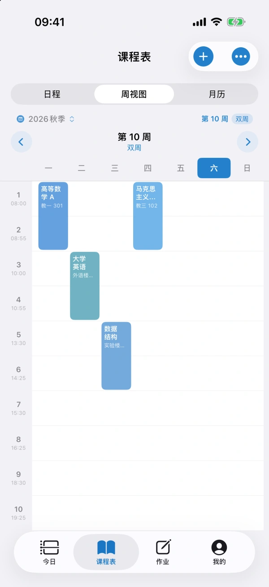
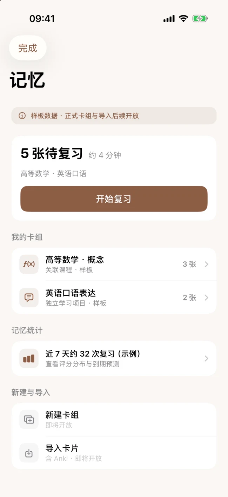
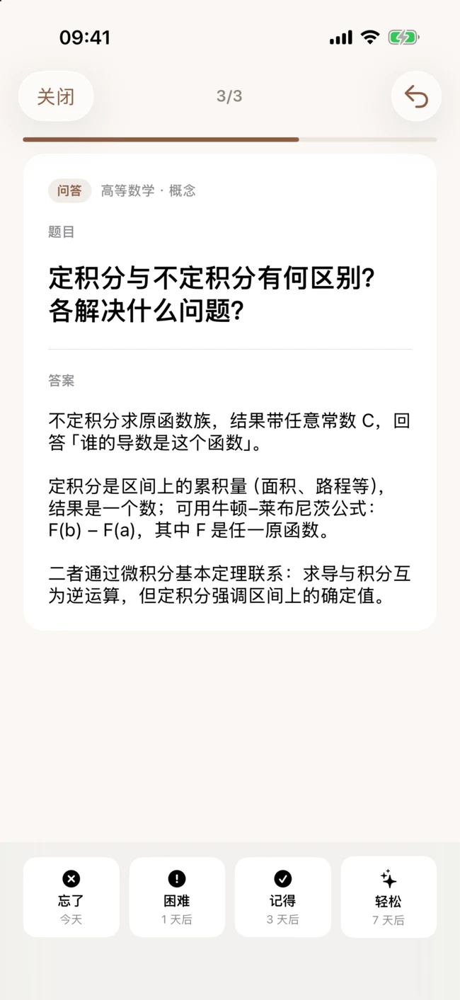
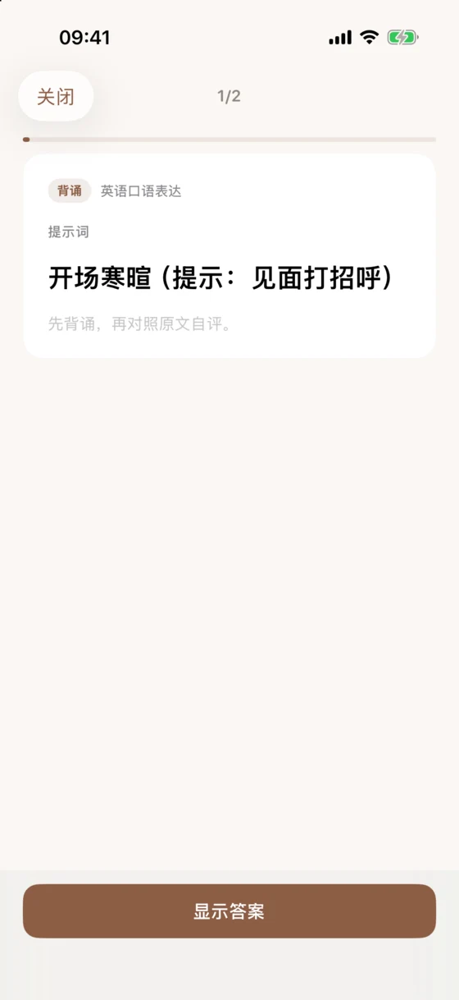
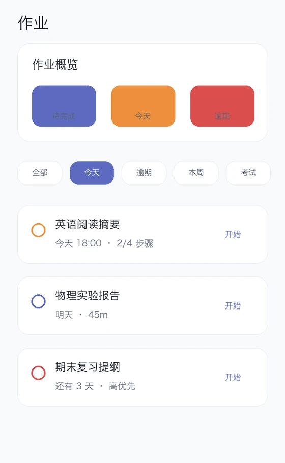
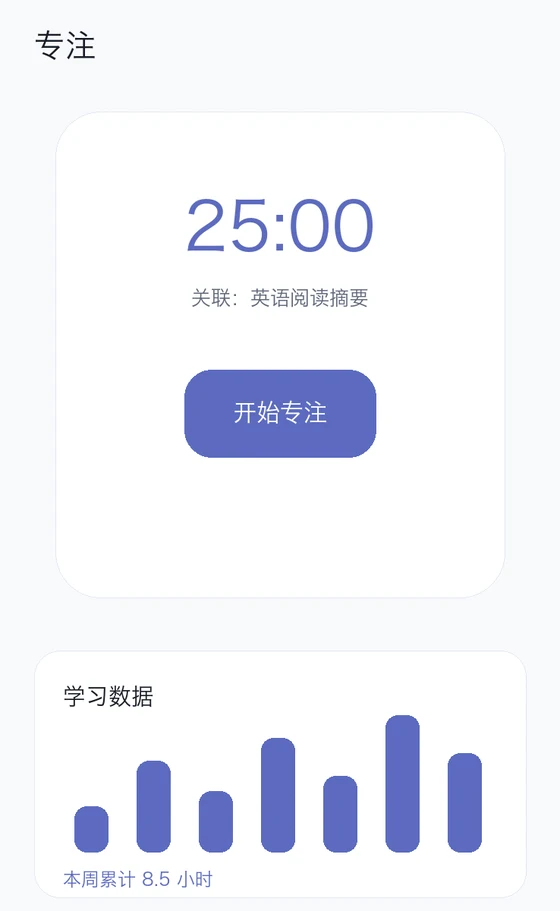
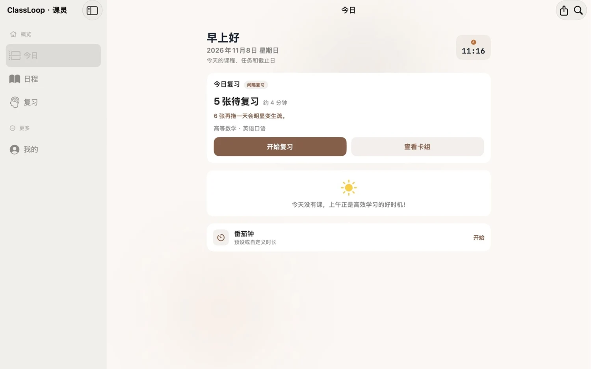
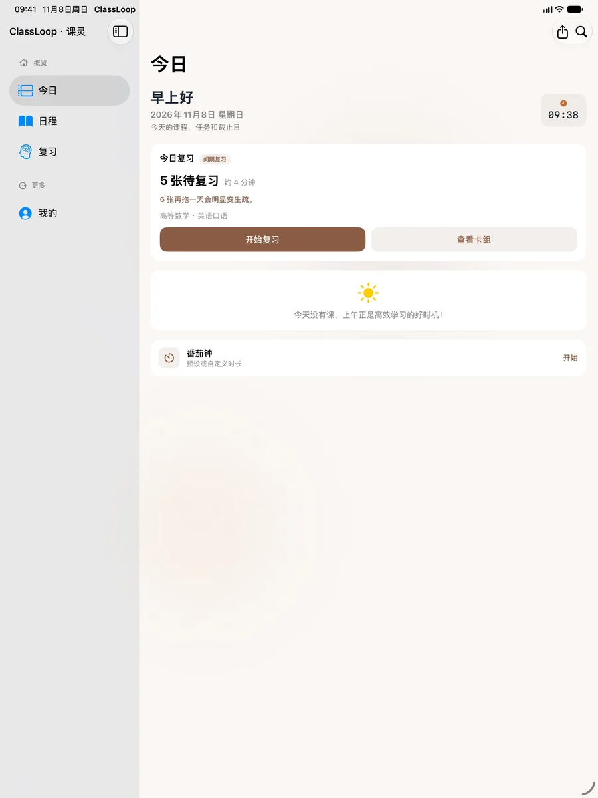

课程表
导入或手动添加课程，随时看下一节课的时间和教室。


艾宾浩斯遗忘曲线
记忆会随着时间变模糊。ClassLoop 用间隔复习帮你反复巩固。想不起来的卡片更早回来，已经记牢的卡片可以隔更久再见。
一次复习
手动制卡，或导入 CSV、TSV 文件。
先试着回答，再翻卡核对。每天从到期队列开始。
回想起来有多费力？用四档自评，让排程跟着掌握程度变化。


导入或手动添加课程，随时看下一节课的时间和教室。

记下任务和重要日期，在「今日」查看当天安排。

为一项任务开启番茄钟，回顾完成情况和专注时长。
免费版与 ClassLoop Pro
免费版包含制卡、到期复习和基础统计。想集中练薄弱内容，或看清每张卡的掌握情况，可以选择 Pro。
| 功能 | 免费版 | Pro |
|---|---|---|
| 记忆卡与复习 | 建卡组、导入卡片、到期复习与自动排程 | 包含免费功能，可按标签筛选或只复习遗忘过的卡 |
| 复习统计 | 到期数量、近 7 天复习次数 | 另可查看各卡组及单张卡的掌握情况 |
| 课表与专注 | 课表导入、任务、番茄钟与基础报告 | 另有学期复用、小组件、高清报告和进阶专注统计 |
| 外观 | 经典陶土、清澈蓝 | 另有紫罗兰、薄荷、日落和墨白主题 |
三种方式解锁相同的 Pro 权益。
¥8／月
按月自动续订
¥68／年
按年自动续订
¥98／一次性
一次购买，长期使用 Pro
以上金额以人民币显示。实际价格与优惠以 App 内购买页面为准。订阅管理和取消方式见使用条款。
iPhone、iPad 与 Mac
路上用 iPhone 过几张卡，回到桌前，用 iPad 或 Mac 的大屏整理卡组、查看复习安排。
也可在设备上的 App Store 搜索「课灵 ClassLoop」。

